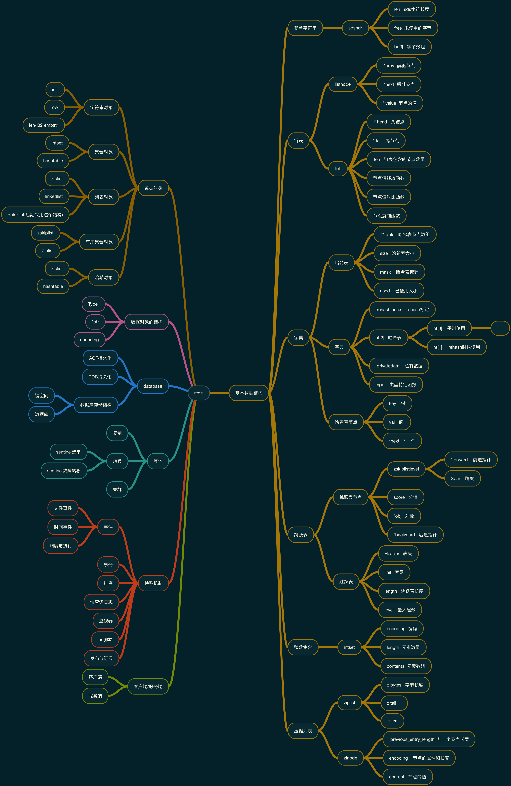
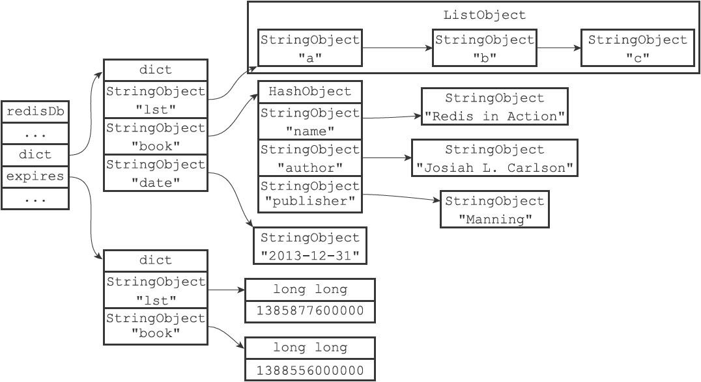

redis分享
Author: leriou lee 2017.10.12
redis基本概述
redis是一个使用c语言开发的k-v缓存系统,其实不仅仅作为缓存,由于redis内部的底层数据结构设计的非常完善
我们也可以把redis作为一个现成的数据结构实现集合,只要了解redis内部的基础数据结构和实现,我们就能利用它做很多事情
比如我们想利用某种数据结构的特性(例如:跳跃表),又不想自己实现,就可以在redis的基础之上构建业务
redis目前支持5种数据对象,基本可以满足大多数的业务场景
ps: 现在5.0发布已经有6种了
redis的大致工作流程
1. 启用redis-server,使用socket服务监听端口(redis服务端)
2. 客户端启用socket连接到服务器,通过认证,服务器维护client的信息(使用链表持有)
3. 客户端发送命令, 服务器接收到命令根据命令表进行执行和查找等,返回结果(将结果保存到client的输出缓冲区)
4. 客户端解析服务器返回的结果
redis的应用
redis作为一个缓存中间件, 可以帮助我们解决很多业务中遇到的问题,由于redis内部跟能机制比较丰富,又不仅仅可以作为简单的缓存中间件使用
基于redis可以解决的问题
redis可以帮助我们解决很多业务中的问题,下面简单列举一下
作为服务间的共享空间或临时存储 例如: 计数器,注册器/协调器,在分布式应用中做桥接
由于redis是一个独立的服务,不依赖任何其他的服务,同时又具有高效的存储功能
我们可以用redis在不同的应用和系统服务之间进行简单的数据传递,或者存放部分中间数据
相当于多个服务之间的共享内存,我们可以”使用共享内存来通信”为高读写要求的场景提供数据存储 例如: 热点数据缓存/流量控制(漏桶和令牌桶)
redis由于是一个内存数据库,读写速度执行非常的快
在一个最低配的的阿里云机器上可以达到8w/s的ops,非常适合用来处理一些对读写性能要求极高的场景
比如:部分热点商品数据,秒杀活动,流量控制等其他可以利用redis特性的场景 例如: 搜索/bitmap/数据匹配/消息队列/发布订阅
redis内部还有很多的特殊机制实现了比较丰富的功能, 如:发布订阅.
我们也可以利用redis的一写数据结构特性来构建倒排索引,以实现简单的搜索功能
也可以利用list的数据结构的特性实现简单的消息队列
Redis的读写
通信协议RESP
RESP协议在Redis 1.2中引入，但它成为与Redis 2.0中的Redis服务器通信的标准方式。 这是每一个Redis客户端中应该实现的协议。
RESP实际上是一个支持以下数据类型的序列化协议：单行字符串，错误信息，整型，多行字符串和数组。
RESP在Redis中用作请求 - 响应协议的方式如下：
客户端将命令作为字符串数组发送到Redis服务器。
服务器根据命令实现回复一种RESP类型数据。
在 RESP 中, 一些数据的类型通过它的第一个字节进行判断：
单行回复：回复的第一个字节是 “+”
错误信息：回复的第一个字节是 “-“
整形数字：回复的第一个字节是 “:”
多行字符串：回复的第一个字节是 “$”
数组：回复的第一个字节是 “*”
此外，RESP能够使用稍后指定的Bulk Strings或Array的特殊变体来表示Null值。
在RESP中，协议的不同部分始终以“\ r \ n”（CRLF）结束。
读写过程
Redis的读过程可以简化为:
- client客户端通过socket发请求
- server端监听服务端口, 收到请求, 解析协议, 查找命令表
- server端进行数据操作, 更新数据状态
- server端返回数据或信息, client端接受并解析
其中细节颇多, 值得注意的就是 server端内部会进行很多检查工作
比如: 检查键的订阅者, 是否有监听者(monitor), hash负载因子如何, 是否需要rehash, 主从同步等信息
Redis在集群模式下, 会把key根据hash映射到 16384个槽其中的一个, 再根据槽所在的节点对客户端操作进行应答
如果该key所在槽不归本节点维护, 服务器会返回moved错误
而且cluster模式下不能使用Redis的pipeline功能, 除非你能保证pipeline操作的所有key都在同一节点上
Redis的持久化
问题
redis有别于memcache的一个区别就是redis支持数据持久化,redis可以通过采用一定的策略将内存中的数据持久化到本地磁盘上面
这么做不仅有利于数据的完整性和可用性, 同时也可以在服务器重启或者迁移过程中实现方便的数据恢复,一般来说如果设置了合理的持久化策略,就算是服务进程出了问题只要重启服务,并不会丢失太多的数据
redis的持久化相关的主要有以下几点:
- RDB: 基于内存状态的持久化操作
- AOF: 基于命令操作的持久化操作
- AOF重写: 基于内存的持久化(命令格式)
RDB
RDB:持久化相当于对当前的数据库状态进行一次快照备份, 是将当前的内存数据库中的数据进行序列化保存到本地的操作, 如果数据库使用量比较大,在持久化的时候可能会对性能造成比较大的影响,可以使用命令 save(在主进程执行持久化,会造成主进程阻塞) 或 bgsave(创建一个子进程来执行持久化,不会阻塞主进程,但是执行时会消耗大量的内存)来执行RDB持久化
AOF
AOF(append only file): AOF持久化是对redis的命令进行记录,恢复时按照命令重新执行一遍,以恢复数据库状态的持久化形式,有点类似于GFS里面的基于日志的恢复机制. AOF持久化对性能影响没有RDB那么大,每当redis执行一个命令,redis会根据AOF持久化的设置规则判断是否进行持久化,AOF可以根据命令执行时间和频率来执行持久化策略,比如: 3s执行100个命令则进行持久化,每个命令都持久化等
Rewrite AOF
AOF重写: 但是AOF也有一些缺点,有可能造成AOF文件非常的大,举个例子: 我先设置键a为10(set a 10),然后设置键a为5(set a 5),重新设置键a为10(set a 10), 这三条命令执行以后最终的数据状态中的表现结果是a=10,但是在AOF文件中会有3条命令.如果某个键的变动频率非常的高,就会消耗还多的数据命令来记录数据的变化,比如计数器.
redis提供了AOF重写功能来解决这种情况, AOF重写是对当前的内存数据库状态进行命令反向解析,比如,上面的例子,在进行AOF重写的时候,redis看到数据库中的键a的值是10 ,会反向生成一条命令 set a 10,将该命令写到重写文件中,这样就能有效的减小AOF文件的体积
redis的其他一些常用的机制
事务
redis中的事务基于链表实现,跟普通的数据库事务不同的是,redis的事务不支持回滚数据,执行失败了也不会进行通知 redis在的事务其实相当于使用一个pipeline 将一系列的操作一起打包发给redisServer来执行发布订阅
redis的发布订阅也是基于链表实现,redis的订阅相当于将某个客户端加入到订阅该模式的链表中,redis在执行发布消息的时候会沿着链表去检查所有订阅了符合该模式的所有客户端,将消息发送给他们.监控(monitor)
监控功能也是基于链表实现,redis的监视器是一种特殊的redis客户端,服务器会在执行命令时候,将命令同时发送给所有监视器列表上面的客户端哨兵(sentinal)
redis哨兵是官方的集群方案出来之前的一种分布式解决方案,哨兵可以监控服务器,并在服务器出问题时候采用选举策略将从服务器省纪委主服务器保证服务稳定排序(内部实现)
redis的内部排序主要对set,sort set,list这三个数据结构起作用,旨在让用户可以用过自定义的方式对内部数据进行排序
redis Representation
这里做了一个简单的redis的脑图, 着重描述了一下内部的基本数据结构的关系

百度脑图地址:
http://naotu.baidu.com/file/ee2d1316a2eb6b2d4fc5b0c876c50685?token=cb284164f0989037
应用实例
redis的常见高可用部署方案
- keepalived(基于VRRP协议)
- 哨兵(sentinal)
- 集群(cluster): redis3.0之后提供
- 其他第三方方案
其中各种方案各有优点, 我们使用的是redis的官方cluster方案
集群使用中的一些坑
- 主从切换,故障转移
redis的主服务器出问题以后,从服务器会顶替主服务器对外提供副服务,但是如果客户端没有对集群中的主节点配置进行更新, 会导致客户端和服务器主节点配置对应不上,从而导致redis操作失败,部分redis客户端支持集群模式,可以自动判断当前集群的主节点,从而自动进行配置调整
- 分片导致的数据分布问题
redis内部采用16384个槽来对存储的数据进行分配,数据分配到槽上面,槽分配到节点机器上面.但是这样也而导致在进行部分数据操作的时候会出现问题
故障转移
主节点挂掉之后,怎么自动修改配置,使服务正常?
3个思路:
- 后台定时检查,修改配置或将配置放入zk等,实例化客户端的时候从zk中实时获取配置信息
- 客户端程序执行redis命令失败时,进行消息通知,检查当前的节点配置,修改配置
- 每次redis对象实例化之后检查集群状态,程序中动态修改配置
以上思路都需要使用cluster node命令从集群中获取当前节点信息,解析出来当前的集群主节点,区别就是修改配置的方式和时间点不同
1 |
|
其他问题:
1. 多主节点的槽分配导致的无法对复杂数据结构(例如hash)进行重命名操作
2. pipeline的使用受节点限制
redis的底层数据对象和数据结构
redis基本数据对象在我们自己项目中的使用
redis提供了多种基本的数据对象,已经能满足我们的大部分业务需求
以下是各种数据结构在我们业务中的使用示例
1 | str: 适用于简单存储(临时标记,计数器等) |
其他一些不建议的数据对象使用方法:
1 |
|
redis中的数据库键空间

数据对象和底层实现的数据结构对应关系
数据对象的实现之所以有这种情况,其实是适应2个不同场景, 省内存和常规使用
| 对象 | 省内存 | 常规 |
|---|---|---|
| str | int/embstr | row |
| list | ziplist | linkedlist(quicklist) |
| hash | ziplist | hashtable |
| set | intset | hashtable |
| zset | ziplist | skiplist |
redis在3.2之后使用quicklist替代了linkedlist作为列表对象的底层实现
ps: 我还另外写过两篇稍微详细点的关于redis数据结构(https://leriou.github.io/post-redis-data-structure/)和数据对象的文章(https://leriou.github.io/post-redis-object/)
问题实例
一个redis注册器
一个曾经的小问题,一段伪代码
1 |
|
潜在的问题: 不支持多线程并发, 任务不能多线程同时进行
解决方案: 借用redis作为注册器,实现类似乐观锁的机制
具体方案:
1 |
|
以上这个程序的核心思想可以用以下流程来描述:
第一步: 正常的数据处理流程
第一个进程来到向注册器索要自己处理的数据起始值,注册器发现当前没有进程在进行,
并且没有flag标记(程序处理到哪里了),给出起始值0,
并在注册器记录里面记录0:1505287993,意思是有程序正在执行从0开始的数据,
进程取1000条数据,将待处理的最大的数据的id设为flag = 1006,
处理完毕将删除注册器中的0:1505287993记录;第二步: 有其他进程在执行时候的情况
然后第二个程序来执行的时候向注册器索要可以执行的起始值,
注册器查看记录发现0:1505287997并且时间没有过期,
说明0其实的数据已经有人在处理,并且没有过期的注册信息,
于是发放当前的flag给第二个程序,并想注册期记录1006:1505287997,
第二个程序取数据1000条,假设ID范围为1006-2390,将处理标记标记为flag = 2390,
处理完毕删除注册其中的自己的处理进度记录1006:1505287997;第三步: 针对有部分进程断掉的情况
如果第一个程序中间断掉,
则不能删除自己的处理进度记录0:1505287993,
此时新的程序向注册器索要起始值时,
注册器会发送当前过期的(过期表示处理该记录的程序处理中断了)的程序起始值0,
并标记当前处理的程序是二次处理,
二次处理的程序不会更新flag,
处理完毕删除自己的处理记录
ps: 整个流程有点类似于常见的”锁”的概念
缺点
这个处理方案有个缺点, 要求数据的处理操作是幂等的,也就是无论操作多少次,操作结果都是一样的,或者不具有累加效应
查询操作就是最常见的幂等操作
流程图
具体流程图:
redis其他应用
我们也可以使用redis的集合来构建倒排索引以实现搜索功能
也能使用redis的发布订阅来实现简单的消息通知系统(不过redis的发布订阅缺点很明显)
或者使用redis的有序集合统计同时在线用户数
或者用时间戳为key构建一个bitmap,将对应用户的位置置为1, 每天更新